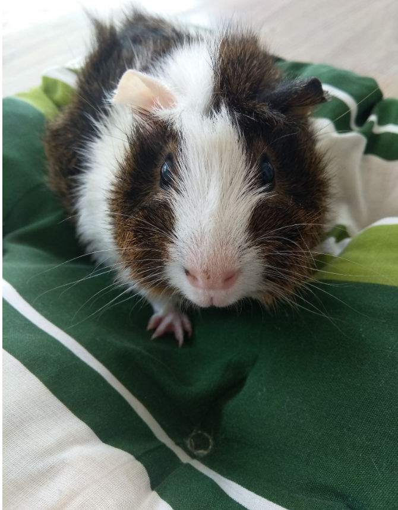

Nie kupuj, adoptuj!
Poznaj świnki morskie czekające na kochający dom!
świnka 1
Tutaj znajduje się opis świnki 1. Jeżeli świnka 1 skradła Twoje serce udaj się do formularza adopcyjnego.
świnka 2
Tutaj znajduje się opis świnki 2. Jeżeli świnka 2 skradła Twoje serce udaj się do formularza adopcyjnego.
świnka 3
Tutaj znajduje się opis świnki 3. Jeżeli świnka 3 skradła Twoje serce udaj się do formularza adopcyjnego.
świnka 4
Tutaj znajduje się opis świnki 4. Jeżeli świnka 4 skradła Twoje serce udaj się do formularza adopcyjnego.
świnka 5
Tutaj znajduje się opis świnki 5. Jeżeli świnka 5 skradła Twoje serce udaj się do formularza adopcyjnego.